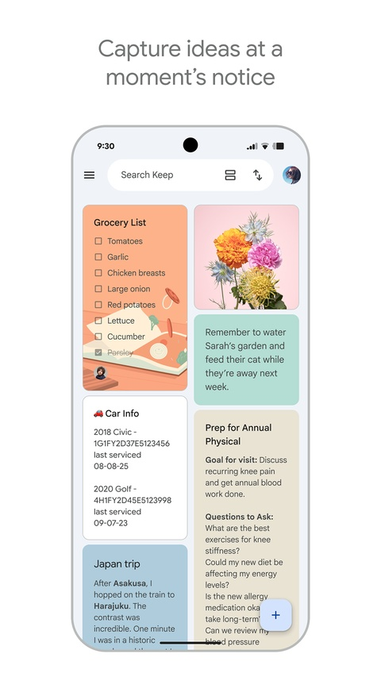

Google Keep 踩坑实录 —— 看着简单的便签 App，藏着 5 个容易翻车的点
Google Keep 以"极简"著称，用着顺手但设计细节里藏着好几个容易让新手懵圈的坑。图片删了找不回、归档后置顶失效、企业账户侧边栏消失……这篇把我踩过的 5 个实坑一次说清。
我用 Google Keep 快两年了，当初找google keep下载的时候就是冲着它的"简单"——一个便签 App 还能有多复杂？结果用着用着发现，它确实简单，但简单里藏的坑真不少。都是那种"第一次遇到以为要重装"级别的坑，今天把这几个说一下，用着的人刚好避一避。
先说最容易让新人忽视的一点：Google Keep官网虽然是 Google 生态里的轻量应用，但它的定位从不是"专业笔记管理"，而是"极速捕获"。所以很多设计决策都围绕"快速记下来"而非"精细管理"来做——这是理解下面好几个坑的前提。

坑一：图片笔记删了找不回，还悄悄吃你 Drive 空间
症状：我习惯拍白板存会议记录。某天清理笔记时手滑删了一条带图片的，然后就慌了——回收站里只看得到文字片段，图片好像没跟着进去？而且慢慢发现 Google Drive 15GB 免费空间掉得比预想的快很多，还以为是照片太多。
原因：Keep 的图片笔记有两个设计，都不够显眼：第一，删除笔记里的图片就是真删了——Keep 不会在什么地方偷偷留一份原始副本，不是"隐藏了"或"归档了"，是彻底没了；第二，所有图片都计入 Google Drive 的存储配额，你以为 Keep 自带空间其实没有，每一张拍下来的白板、收据、菜单都在吃那 15GB 免费额度。
解法：图片笔记删之前先确认三遍——尤其那种"反正拍的模糊删了吧"的心态，回头想起内容需要的时候真没了。需要长期留底的图片笔记，拍完后顺手另存到 Drive 的专门文件夹；定期去 Drive 设置 → 存储占用里看一眼 Keep 的文件夹占了多少，别等快满了才发现。
坑二：置顶白做了 —— 归档后自动取消，恢复还不回来
症状：我把本周三项待办置顶放最顶。周五干完一批归档了，周一回来发现置顶的全没了——而且从回收站恢复一条之前置顶过的，它还是不置顶。
原因：Keep 的设计是归档 = 自动取消置顶——归档的笔记本来就不该在"当前最重要"的区域，所以归档动作顺带去掉置顶标志。更坑的是，从回收站恢复的笔记不会自动重新置顶。回收站是 7 天临时存储，恢复后就是一条普通笔记，不会记住它之前的置顶状态。我猜这是 Keep "不记得太多"哲学的延伸，但确实反直觉。
解法：归档之前先想清楚——真的完成了吗？还是"先归档以后可能要用"。如果是后者，留着比归档好。恢复笔记后手动重新置顶一下，就几秒的事，但我每次都是恢复完才想起这茬。
坑三：公司账户找不到侧边栏 —— 被管理员关了
症状：在个人 Gmail 上 Keep 侧边栏好好的，Docs 里写文档时随时能打开记想法。换了公司 Workspace 账户死活找不到——右侧边栏点开了也没有 Keep 图标。
原因：这里有两层：第一，Keep 的侧边栏入口默认是折叠的，有时候你以为没了其实只是没展开，先检查一下；第二，Workspace 企业管理员可以禁用侧边栏集成功能，这是管理员端的权限设置，普通用户在客户端改不了。我后来找公司 IT 问了才知道，他们因为安全合规关掉了 Google Workspace 应用间的侧边栏互通。
解法：先确认侧边栏是不是折叠状态；真被禁用的话，要么找管理员开（理由要合理，比如"工作中需要从 Docs 快速存想法到 Keep"），要么去google keep文档查更多替代方案，实在不行用 keep.google.com 网页版配合使用——开两个窗口也能凑合，只是不那么丝滑。
坑四：OCR 拍了就以为识别了 —— 没联网等于白拍
症状：在地铁上拍了一张纸质表格文档，到家后想搜关键词"季度目标"找不到。打开笔记点"提取文字"，只出来个空框。
原因：Keep 的 OCR 文字识别是云端处理的。拍照本身不需要网络（可以先存本地），但文字识别必须有网络请求 Google 的服务器才能完成。如果那张图拍了之后你一直离线，或者当时网络很差，OCR 就一直没跑完。我那次就是地铁里拍的，到家就睡了，第二天搜才发现没识别。
解法：拍了图片笔记，过会儿有网络时打开看一眼——如果图片打开了但没看到自动识别的文字（搜索关键词找不到），手动点击图片 → 右下角三个点 → 提取文字，看识别结果。OCR 完成后会缓存，之后搜关键词就能搜到了。
坑五：标签颜色贪多，最后自己找不到东西
症状：一开始我给每条笔记都加标签、配颜色——"项目A""项目B""待办""灵感""购物"，颜色黄的蓝的绿的红的。几个月后打开 Keep，50 多个标签、6 种颜色混在一起，反而找不到任何东西了。每次打开 Keep 都要先想"我那条购物清单加的什么标签来着"。
原因：Keep 的核心设计哲学是"快速捕获"而非"精细管理"。标签和颜色是辅助分类手段，不是主组织方式——置顶 + 搜索才是 Keep 的核心检索手段。我犯的错误是把 Keep 当成 Notion 或 Obsidian 来用，给每条笔记做精细分类，反而把最核心的优势浪费了。而且 Keep 的标签系统本身不支持层级嵌套，标签多了就是一坨。
解法：颜色按大类就够了——比如黄 = 工作相关、蓝 = 生活日常、红 = 紧急事项，别超过 4 种；标签用高频的几个，比如当前在做的项目名，别每条都加。真要找东西，直接搜关键词比翻标签快得多。我现在基本放弃标签了，置顶 + 搜索 + 颜色三色就够用。

防坑清单（速查）
- 图片笔记删之前三思，Keep 不留副本；定期检查 Drive 存储占用
- 归档自动取消置顶，回收站恢复后记得手动重新置顶
- 企业账户找不到侧边栏，先确认折叠状态，再考虑是不是被管理员禁了
- OCR 需要联网，拍了图过会儿打开确认识别是否完成
- 标签颜色别贪多，置顶 + 搜索 + 三色分类是 Keep 的正确姿势
说实在的，这些坑都是"用久了才知道"的级别——Keep 本身确实简单好用，"按下去就能写"的体验至今没几个 App 能比。顺手整理的相关资料放在GitHub，国内访问不方便的话还有Gitee和GitCode镜像。但简单不代表没有设计上的小刁钻，知道之后其实相当省心。我现在还在用，而且比刚开始顺多了。